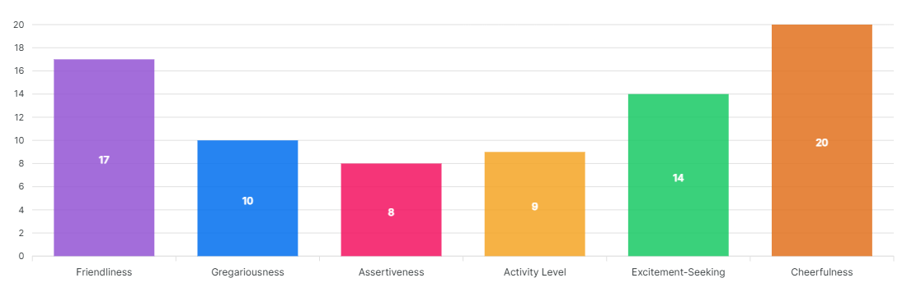

Extraversion is marked by pronounced engagement with the external world.
Extraverts enjoy being with people, are full of energy, and often experience positive emotions. They tend to be enthusiastic, action-oriented, individuals who are likely to say "Yes!" or "Let's go!" to opportunities for excitement. In groups they like to talk, assert themselves, and draw attention to themselves.
Introverts lack the exuberance, energy, and activity levels of extraverts. They tend to be quiet, low-key, deliberate, and disengaged from the social world. Their lack of social involvement should not be interpreted as shyness or depression; the introvert simply needs less stimulation than an extravert and prefers to be alone.
The independence and reserve of the introvert is sometimes mistaken as unfriendliness or arrogance. In reality, an introvert who scores high on the agreeableness dimension will not seek others out but will be quite pleasant when approached.
